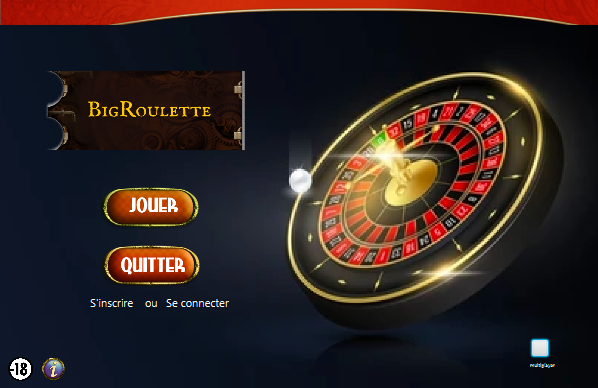
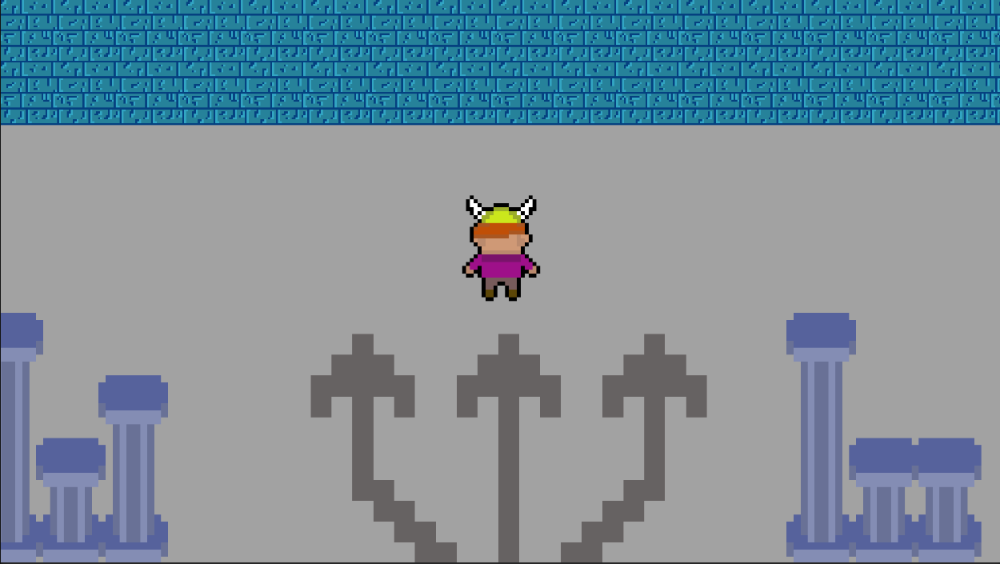
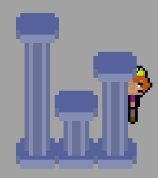

Porfolio de Téo Moerel
Je suis Téo Moerel, actuellement étudiant en 2e année de Bachelor Universitaire de Technologique en Informatique à l'IUT Montpellier. J'ai fait un Bac général en spécialités Mathématiques et Physique-chimie en option mathématiques expertes. Je possède des compétences en SQL, gestion de base de données, en programmation en générale mais je maîtrise le java. Je suis un fan de musique et je prends des cours de chant et de guitare électrique.
Curiculum Vitae

Mes Projets
Projets IUT
Jeu de Casino
Ce projet consiste à produire un jeu de casino existant de A à Z en groupe de 5 étudiants comme si nous étions en contrat avec un client pour produire son jeu. Le but est de faire ce jeu en méthode agile avec des rendus toutes les 3 semaines environ pour que les clients remarque notre avancement et puisse nous dire ce qui ne leur va pas et ce qui leur va. Nous devions aussi choisir un Scrum Master et un Product Owner. Mon groupe et moi avons choisi de produire une roulette. C’est un jeu assez basique dans un casino qui se joue avec des paris. Chaque joueur paris sur une case ou plusieurs avec des jetons, celle-ci représentent des nombres, des couleurs, ou un seul nombre. Puis le maître du jeu fait tourner la roulette avec une bille dedans, et lorsque la roulette s’arrête le numéro gagnant est celui sur lequel est tombé la bille par exemple le 1 rouge. Et les joueurs gagnants repartent avec leur mise multipliée par le montant de la difficulté de la case (si c’est pair ou impaire c’est fois 2 alors que si c’est un nombre c’est fois 36).
Ce que j'ai produit durant ce projet : J’ai ainsi pris le rôle de Product Owner pour ce projet. Je dois ainsi donc m’occuper de la relation avec les clients et m’assurer que le projet leur plaît et que c’est bien ce qu’ils veulent. J’ai aussi dû participer à la conception du jeu avant de pouvoir commencer la programmation. J’ai donc fait les diagrammes UML de la roulette.
Lors de ce sprint, j’ai programmé beaucoup en javaFX pour produire un jeu jouable et visuellement agréable au joueur. Je me suis occupé de faire fonctionner le plateau des paris, les jetons qui sont les montants des paris, le bouton valider et l’affichage du joueur pour que ses mises et sa mise totale soient bien affichées et actualisées.
Dans la période du Sprint 3, j’ai ajouté une fonction dans les paramètres pour changer la langue du jeu et la mettre en anglais, j’ai aussi aidé à l’animation de la roulette et à afficher les jetons pariés. Et j’ai passé beaucoup de temps sur le multijoueur pour que l’on puisse jouer en local jusqu’à 4 joueurs en même temps, chaque joueur paris et la roulette se tourne lorsque le dernier joueur à choisi son action (on peut aussi désormais passer).
Pour ce dernier Sprint, j’ai fini le multijoueur en ajoutant le paris multiple pour chaque joueur (cela consiste en pariant sur plusieurs cases voisines). Et j’ai aidé pour le refactoring du code et nous avons essayé de repasser dans notre code pour respecter les principes SOLID.
nous avons utilisé la méthode agile tout au long de ce projet universitaire. Cette méthode nous a beaucoup aidé à produire un jeu qui correspond aux attentes des clients. Nous avons découpé le travail selon les forces et les faiblesses des membres du groupe, étant le Product Owner, je distribuais les tâches selon leur importance et urgence dans le projet et donc aussi selon les forces et faiblesses de mes collègues. A chaque fin de Sprint nous faisons une réunion mené par notre Scrum Master pour récapituler le Sprint et distribuer de nouvelles tâches selon ce qu’à dit le client lors du rendu. Nous avons même fait des réunions hebdomadaires pour récapituler les avancements de chacun pour pouvoir réattribuer des tâches si besoin.
Lors de la production de ce projet, nous avons rencontré quelques difficultés que nous avons réussi à régler. Déjà la plus grosse difficulté que nous avons rencontré, c’est lorsque nous devions faire l’animation de la bille par-dessus celle de la roue et qu’elle s’arrête sur le nombre aléatoire sorti par le programme. Nous avons même demandé à chatGPT, à des professeurs, ou même à des amis expérimentés dans les rotations en javaFX. Finalement à la fin du Sprint 4 nous avons réussi à faire cette animation même si nous avions demandé au client (puisque cela faisait longtemps que nous n’y arrivions pas et qu’il fallait une autre solution) s’il était possible de faire une flèche au dessus de la roue à la place d’une bille. Nous avions aussi du mal à afficher le jeton choisi sur la case choisie, d’autant plus qu’après nous avons dû faire apparaître les jetons entre les cases si un multiparis est choisi. Mais nous avons réussi à les faire apparaître en utilisant non pas les cases elle même mais leur coordonnées dans la table paris pour pouvoir faire afficher les jetons au dessus. Le défi est aussi que l’un des membres du groupe était en alternance et donc ne pouvait nous aider que la moitié du temps ou moins. Nous avons donc travaillé plus pour donner un résultat satisfaisant aux clients. Le dernier mais pas des moindre, au début du projet je ne m’étais pas assez penché sur la discussion avec les clients et lors du sprint 2 je n’ai envoyé aucunes nouvelles aux clients. Mais lors du sprint 3 et 4 j’ai bien envoyé des mails même si nous n’avions pas de questions pour rassurer les clients sur le fait que nous sommes bien en train de produire quelque chose et savoir si cela leur plaît.
Lors de ce projet j’ai pu beaucoup amélioré ma programmation de base dans n’importe quel langage. En effet, le refactoring du code et le respect des principes SOLID sur un projet que j’ai mené m’ont beaucoup appris. Par la suite, le fait d’avoir été le Product Owner m’a beaucoup aidé à comprendre ce qu'étaient les attentes du client et comment il fallait construire le projet autour d’eux. Cela m’a aussi fait comprendre l’importance de la méthode agile et du Scrum pour mener un projet à bien de la meilleure des manières. Je me suis aussi amélioré en javaFX et en diagramme UML. Enfin j’ai compris que la relation inter équipe est primordiale pour le bon fonctionnement d’un projet et de sa réussite. J’ai eu la chance d’avoir une bonne équipe à mes côtés.


Projets personnels
La colère des dieux
Ce projet est un jeu sur lequel je travaille quand j'ai le temps. Je le fais sur Unity et je n'ai pas les données du jeu pour le moment mais lorsque je peux, je mettrais petit à petit mon avancement !
J'ai commencé par imaginer le jeu et comment il serait jouer, pour le moment je n'ai que fait les collisions, le design du joueur, le design de la map et les mouvements de caméra et les déplacements du personnage. Tout ce qui est code, je l'ai fait en C# ce qui est le langage de programmation du logiciel que j'utilise (Unity). Voici quelques images montrant la première salle du jeu qui est fermé pour le moment.
Capture d'écran du jeu vue éditeur :

Capture d'écran du jeu lorsqu'il est lancé :
Capture d'écran d'un exemple de collision (Le personnage ne peut pas aller sur un pillier, mais peut passer derrière):
Pour le moment je n'ai pas rencontré de grande difficulté si ce n'est les déplacements du personnage puisque j'apprends et donc je fait des recherches et regardes des vidéos. Donc mes problèmes sont vite réglés.
© 2023-2024 Porfolio de Téo Moerel. Tous droits réservés.